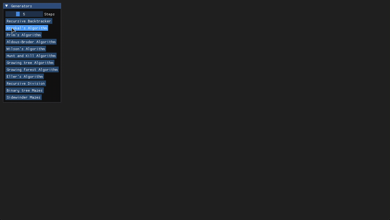

Kruskal’s Algorithm
Building a perfect maze by knocking down walls in random order, using union-find to avoid loops
Kruskal’s Algorithm #
The Recursive Backtracker carved the maze with a single walker. Kruskal’s Algorithm doesn’t walk anywhere. It looks at the whole maze at once.
Imagine every room starts out as its own little island, completely sealed off by walls. Now take every wall in the maze, shuffle them into a random order, and go through them one by one. For each wall, look at the two rooms on either side. If they are already connected to each other, by some path through other rooms, leave the wall alone, because knocking it down would create a loop. If they are not connected yet, knock the wall down. Two islands have just become one.
When the list runs out, every room is part of one big connected area with no loops. That is a perfect maze.
Kruskal’s was originally an algorithm for finding a minimum spanning tree The cheapest way to connect a set of points together with no loops. We met the idea in the introduction. of a weighted graph. A maze is just the case where every wall has the same weight, so the order is random instead of sorted by cost.

The new idea: union-find #
The whole algorithm depends on one question: are these two rooms already connected? We ask it for every wall, so it needs to be fast. Flood-filling from one room to see if it reaches the other would work, but it would be far too slow.
The answer is a data structure called union-find (also known as a disjoint set). It keeps track of which rooms belong to the same group, and it has two operations:
find(room)tells you which group a room belongs to.join(a, b)merges two groups into one.
Here is how it works. Every room stores a parent, which is another room in the same group. At the start, every room is its own parent, so every room is its own group. A room that is its own parent is called the root, and the root is the group’s identity.
To find a room’s group, follow the parents until you
reach a root. Two rooms are in the same group exactly when their roots
are the same room. To join two groups, point one root at
the other, and now they share a root.
Following parents all the way up gets slower as the chains get
longer. The fix is path compression: once
find has reached the root, go back and point every room on
the way directly at it. The next find from any of them
takes a single hop.
Pseudocode #
Try implementing this yourself before reading the solution. Two questions for you: Why can this never create a loop? And why is it guaranteed to end with every room connected?
for each room: parent[room] = room
walls = every wall between two rooms
shuffle(walls)
for each wall in walls:
a, b = the two rooms on either side of wall
if find(a) != find(b):
knock out the wall
join(a, b)Remember the four kinds of cells from the introduction. Only the walls go in the list. Rooms are always paths, and pillars and outside cells are never knocked down. The tricky part is finding the two rooms on either side of a wall, which depends on which of its coordinates is even.
Solution #
find :: proc(room: [2]i32, parents: ^[COLS][ROWS][2]i32) -> [2]i32 {
parent := parents[room.x][room.y]
if room == parent do return room
root := find(parent, parents)
parents[room.x][room.y] = root // path compression
return root
}
join :: proc(root_a, root_b: [2]i32, parents: ^[COLS][ROWS][2]i32) {
parents[root_a.x][root_a.y] = root_b
}
kruskals :: proc(maze: ^[COLS][ROWS]Cell) {
parents: [COLS][ROWS][2]i32
walls: [dynamic][2]i32
defer delete(walls)
for x in 1..<i32(COLS - 1) {
for y in 1..<i32(ROWS - 1) {
if x & 1 == 1 && y & 1 == 1 {
// a room: open it, and make it its own group
maze[x][y] = .PATH
parents[x][y] = {x, y}
} else if (x + y) & 1 == 1 {
// exactly one odd coordinate: a wall
append(&walls, [2]i32{x, y})
}
// both even: a pillar, never touched
}
}
rand.shuffle(walls[:])
for wall in walls {
// an even x puts the two rooms left and right of the wall,
// an even y puts them above and below
offset := [2]i32{wall.y & 1, wall.x & 1}
a, b := wall - offset, wall + offset
root_a, root_b := find(a, &parents), find(b, &parents)
if root_a == root_b do continue
maze[wall.x][wall.y] = .PATH
join(root_a, root_b, &parents)
}
}
generate :: proc(maze: ^[COLS][ROWS]Cell) {
kruskals(maze)
}Run it, press space a few times.
odin run .